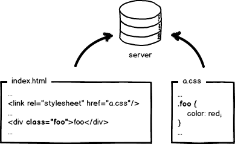
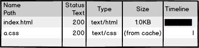
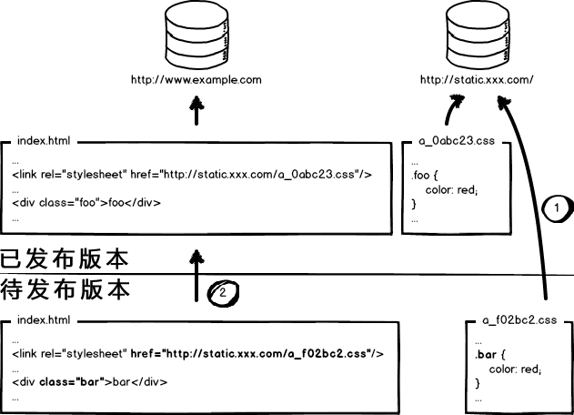

This is a very interestingNon-mainstream frontend fieldfield. It explores how to use engineering methods to solve the comprehensive problem of front-end development and deployment optimization. I have been learning and practicing since I entered the industry.
In my impression, Facebook is the pioneer in this field. Those who are interested and have a VPN can check out Facebook's page source code and understand what engineering really means.
Next, I want to explain from the principles. There are many images and it's quite long; I hope you can be patient enough to read to the end.

Let's return to basics and start with primitive front-end development. The picture above is a "cute" index.html page and its style file a.css. Write code in a text editor, no compilation needed, preview locally, confirm it's OK, put it on the server, and wait for users to visit. Front-end is that simple, so fun, the barrier to entry is so low, you can learn it in minutes, right?!

Then we visit the page, see the effect, and check the network request: 200! Not bad, too damn perfect! So, is development complete... done?
Wait, this isn't over yet! For big companies, the insane traffic and performance metrics will make front-end not "fun" at all.
Look at the request for a.css. If it is loaded every time a user visits the page, doesn't it affect performance and waste bandwidth? We hope it would be like this:

Use 304 to let the browser use local cache. But is that enough? No! 304 is called negotiated caching; it still has to communicate with the server once. Our optimization level is insane, so we must completely eliminate this request, making it like this:

Force the browser to use local cache (cache-control/expires), no communication with the server. OK, request-side optimization has reached an insane level, but here's the question: if you don't let the browser send resource requests, how does the cache update?
Good, I believe someone has thought of a solution:By updating the resource paths referenced in the page, the browser is made to voluntarily abandon the cache and load new resources.Like this:

Next release, change the link addresses to new versions, and the resources are updated, right? OK, is the problem solved?! Of course not! The insanity of big companies strikes again. Think about this situation:

The page references 3 CSS files, but a certain release only modified a.css. If all link versions are updated, b.css and c.css caches will also be invalidated. Wouldn't that be wasteful again?!
Turning on insane mode again, we can easily see that to solve this problem, URL changes must be tied to file content. That is, only when file content changes does the corresponding URL change, thus achieving precise file-level cache control.
What is related to file content? We naturally think of using a data digest algorithm to compute digest information for files. Since digest information corresponds one-to-one with file content, we now have a basis for cache control precise to individual files. OK, let's change the URLs to include the digest information:

This time, when a file is modified, only the URL corresponding to that file is updated. It seems perfect at this point. Do you think that's enough? Big companies tell you: Too young, too simple!
Sigh~~~~, let me catch my breath.
To further improve website performance, modern Internet enterprises deploy static resources and dynamic web pages in separate clusters. Static resources are deployed to CDN nodes, and the resources referenced in web pages also become corresponding deployment paths:

OK, when I need to update static resources, I also update the references in the HTML, right? Like this:

This release modified both the page structure and styles, and also updated the URL addresses of static resources. Now it's time to deploy the code. Dear front-end developer, tell me: should we deploy the pages first, or the static resources first?
Deploy the pages first, then deploy the resources: In the time interval between the two deployments, if a user visits the page, they will load old resources in the new page structure and cache this old version as the new version. As a result, the user sees a page with broken styles. Unless they manually refresh, the page will keep running incorrectly until the resource cache expires.Deploy the resources first, then deploy the pages: Within the deployment interval, users with local caches of old resources visit the site. Since the requested page is the old version and the resource references haven't changed, the browser directly uses the local cache, so the page displays normally. But users without local caches or with expired caches will see the old page loading new resources, causing page execution errors. Once page deployment is complete, those users will return to normal when they visit again. OK, the whole pile of analysis above means: deploying either one first won't work! Both will cause page confusion during deployment. Therefore, for projects with low traffic, you can have the developer suffer a bit, secretly deploy in the middle of the night, put static resources online first, then deploy pages, which seems to have fewer problems.
However, big companies are super insane; there is no such "absolute low peak period", only a "relative low peak period". So, for stable service, we must continue to pursue the ultimate!
This bizarre problem originates from overwrite-style publishing of resources. Overwriting already-published resources with to-be-published resources causes this problem. Solving it is simple: implement non-overwrite publishing.

Look at the figure above. Use the file's digest information to rename resource files, and put the digest information into the resource file's publishing path. That way, resources with modified content become new files published online, without overwriting existing resource files. During deployment, first fully deploy static resources, then grayscale-deploy pages, and the whole problem is solved quite perfectly.
Therefore, the static resource optimization solution in big companies basically needs to implement these things:
- Configure very long-term local cache — save bandwidth, improve performance
- Use content digests as the basis for cache updates — precise cache control
- CDN deployment of static resources — optimize network requests
- Change resource publishing paths to implement non-overwrite publishing — smooth upgrades
Doing the full set gives a relatively complete static resource cache control solution. Also, note that static resource cache control requires thatall places where static resources are loaded in the front-end must be handled in this way. Yes, all of them! Not to mention JS and CSS, it must also include resource paths referenced in JS and CSS files. Since digest information is involved, the digest information of referenced resources also changes the content of the referencing file itself, creating cascading digest changes. A rough diagram would be:

OK, we've quickly learned about the optimization and deployment issues that front-end engineering faces with static resource caching. Now a new problem arises: how the hell are engineers supposed to write code like this!!!
To explain the combined approach of optimization and engineering, a bunch of engineering issues will come up, such as modular development, resource loading, request merging, front-end frameworks, and so on. The above is just the beginning; the solution is the essence, but there is far too much to say. I'll expand on it slowly when I have time.
In short, front-end performance optimization is definitely an engineering problem!
The above is not just my imagination. You can observe Baidu or Facebook's pages and static resource source code, examine their resource reference path handling, and the cache control of static resources in network requests. Once again, I admire Facebook's front-end engineering construction level; I'm in awe.
I suggest front-end engineers pay more attention to the front-end engineering field. Some may think their products are small and don't need to be this insane, but it's very likely that one day you'll need to make such changes. Besides, if we can do things more perfectly, why not do it?
Also, don't think these are problems for operations or back-end engineers to solve. If they are left to other roles,Everyone tends to throw problems they don't care about to others., then front-end engineers' development process will be greatly restricted. This situation is not uncommon even in some big companies!
Source: http://www.zhihu.com/question/20790576/answer/32602154